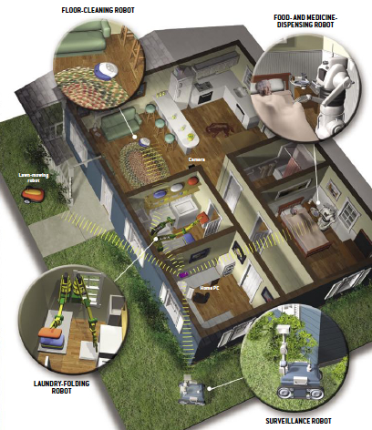
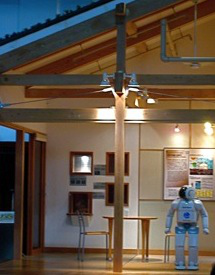

Note: this page was semi-manually generated from the paper. There may be errors.
This paper analyzes scientists' discourses on the social impacts and acceptability of robotics, based on data collected through participant observation and interviews with robotics researchers in the US and Japan. It shows that a linear, technologically determinist, view of the interaction between robots and society is dominant in the field; in this narrative the social “impact” of robotic technologies derives mostly from their technological capabilities and the aim is for society to “accept” and adapt to technological innovations. The framework of mutual shaping and co-production, which explores the dynamic interaction between robotics and society, is proposed as an alternative perspective on the dynamics between society and technology and a framework for envisioning and evaluating social robots. This approach focuses on analyzing how social and cultural factors influence the way technologies are designed, used, and evaluated as well as how technologies affect our construction of social values and meanings. Finally, the paper describes a range of methodologies of contextually grounded and participatory design that fit the mutual shaping framework and support a socially robust understanding of technological development that enables the participation of multiple stakeholders and disciplines.
Keywords Mutual shaping of technology and society · Technological determinism · Design · Social analysis of robotics
The expectation that robots will become a part of everyday life, working alongside humans as assistants, team-mates, care-takers, and companions, has brought the discussion of societal consequences and reactions to robots to the forefront of robotics research. In these future-oriented discussions, social robots often represent “technological fixes” [39]—applications of technology meant to solve social problems that are non-technical in nature—for a variety of pressing issues in contemporary society. Telepresence robots enable knowledge workers to be in multiple places at once [32, 29]; companion and care-taking robots provide supervision and social interaction for children and the elderly [36, 42]; robotic educational assistants assist teachers in busy classrooms [47, 28]; and socially assistive robots help patients follow their dietary and therapeutic regimens [19, 23]. Though motivated by particular social issues, such as an increasing elderly population or the globalization of work, these research aims emphasize the exploration of technical capabilities and define social problems in terms that make them amenable to technological intervention.
A technocentric approach to robotics is further supported by dominant perspectives on the relationship between social change and technological development, which depict a linear relationship between robotics and society. In these narratives, technological development in robotics, led by experts from academia, industry, and government, figures as the primary driver of social progress, while society fills a passive role of accepting and adapting to the results of technological innovation. This technologically determinist framing of the dynamics between technology and society acts as a self-fulfilling prophecy, encouraging the public to view technological change as an inevitability and focus “on how to adapt to technology, not on how to shape it” [22, p.5]. Furthermore, these contemporary formulations of the “science finds, industry applies, man conforms”1 principle do little to address the role socio-cultural norms, values, and assumptions play in the daily practices of designing robotic technologies, allowing these to stay implicit in the design process and out of broader societal debate and decision-making.
In this paper, I propose mutual shaping of robotics and society, which depicts a bidirectional dynamic between society and technology, as an alternative framework for developing social applications of robots. I use data collected during participant observation and interviews with robotics researchers in the US and Japan between 2005 and 2007 to analyze existing discourses on social impacts and acceptability in the context of social robotics research.2 I particularly focus on depictions of the dynamics between technology and society, showing that the dominant discourse in social robotics relies on a technologically determinist notion of social change. I follow with a description of the concept of mutual shaping of society and technology and discuss how we can use it to analyze the process and outcomes of robot design. Finally, I suggest a number of participatory and contextually grounded methods of design, which reflect and include multiple social and disciplinary perspectives, as ways to develop more socially robust and responsible technologies.
The notion of robotic autonomy in practice suggests that, once programmed, robots should be able to operate with minimal human intervention. Robots can also be viewed as “autonomous technologies” [46] in a conceptual sense, indicating that their development is led by scientific imperatives and technological possibilities rather than explicitly identified social choices.3 While it is generally accepted that robots stand to have notable social implications, society often figures as an externality for a significant portion of the design process, until it is time to apply and evaluate designs.
Institutionalized forms of robotics practice highlight laboratories, academic conferences, and funding agencies as the main loci of knowledge production in the field. Within the lab, the social relations and cultural assumptions that underly robot design, while forming the implicit basis of technical decision-making, are obscured by explicit attention to technological innovation. The social context of use and potential users come into focus once robotic technologies have been developed and are ready to be evaluated. Even in these moments of reflection on the interplay between technology and society, the emphasis on technical benchmarks and breakthroughs can persist, although it is becomingly increasingly clear that the measures of success of social robots should include the subjective perceptions of users [1, 48].
The identification of robots with advanced technology, so complex that its functioning can only be understood by experts, further promotes the distancing of social and technological decision-making in robotics from broader society. Faced with the complexity of advanced socio-technical systems, everyday people—the potential users of technologies—leave decisions about the directions for future development to technical experts. Such development often moves ahead without inclusive discussions of the consequences of technological innovation for relevant user groups and society as a whole. The potential users of robotics technologies come to occupy a secondary role in the process of designing robotic technologies; they are present in the field as objects of study, rather than active subjects and participants in the construction of the future uses of robots.
Contrary to the dominant narrative and practices in robotics, the relationship between robotics and society is neither autonomous nor linear. Robot design is influenced from its very inception by the cultural assumptions of designers [33]. Social interactions and evaluations are a fundamental component of the production of technological knowledge and artifacts [13]. The social context of design regulates the relations of production and defines notions of social interaction that are built into robots. Making social choices, explicitly or implicitly, is therefore an integral part of the daily practice of robotics; these choices then motivate technological design and suggest ways to measure the significance of its results.
The practice of robot design extends beyond the production of technological artifacts to include the construction of “technoscientific imaginaries”—narratives about social order, human behavior and psychology, and common norms, beliefs, desires, and expectations.4 Societal applications of robots can reproduce conceptions of social order that favor a particular status quo, such as patriarchal family relations [31] or gendered notions of work [2]. Popular culture, in turn, can be “engineered” to support the introduction of robots into society [16]. In the words of Andrew Pickering, “the world makes us in one and the same process as we make the world.” [30, p.26].
The role of social practices and cultural values in robot design and the concurrent production of robotic technologies and social imaginaries suggest that unconscious as well as conscious decisions in technology design can “open certain social options and close others” [22]. In the next section, we reflect on these emerging robotics imaginaries through an analysis of discourses about society and technology in the robotics community.
In developing robots as technological solutions to social problems, robotics researchers describe the interactions they expect to occur between emerging robotic technologies and society. While social issues are invoked to motivate robotics research, they are quickly subsumed by discussions of technological possibilities and concerns. Roboticists reference a panoply of technological advances—the PC revolution, Moore’s Law,5 ubiquitous technologies—as models and resources supporting the successful implementation and adoption of robots in society. In their emphasis on technological advancement as the determinant of societal success, roboticists define the societal issues they wish to solve “not [as] social, political, cultural, historical problems, but [as] biotechnological problems that call for biotechnological solutions” [31, p.372]. Society, in turn, is displayed as a passive receptor of the products of visioning and negotiation performed by experts in the process of design.

Fig. 1 Bill Gates' visions robots in the home, as shown in Scientific American [14, p.61]. Illustration by Don Foley.
Comparing robotics to the computer and automobile industries, roboticists, governments, and technological enthusiasts expect robots to become equally ubiquitous. Proclaiming that “we live in the robot age,"6 the Aichi Expo held in Japan in the spring of 2005 featured robots as a prominent component of everyday urban life, giving visitors a chance to interact with approximately one hundred different types of robots [21]. Held in the following year in New York, Wired NextFest 2006 featured robots as the future of exploration, transportation, security, health, entertainment, design, and communication. In Japan, communications and electronics firms NEC, Hitachi and Sony are taking part in the robotics market with personal and entertainment robotics projects along with automobile firms Honda, Toyota, and Mitsubishi. In the US, Microsoft’s Bill Gates promotes robotics as the next step in the computer revolution; he envisions robots as PCs that “will get up off the desktop and allow us to see, hear, touch and manipulate objects in places where we are not physically present” [14]. Similarly to computers, the trajectory of social robots starts in the the laboratory, is expected to spread to society through hobby and toy applications, and finally ends with “robots in every home” [14] (see Figure 1).
In this technologically optimistic perspective on the place of robots in society, technological innovation pushes society to a better, though consistently vague, future. The introduction of social robots into our everyday lives is expected to have a dramatic effect, in the manner of computer and internet technologies:
“Of course we knew computers had many possibilities, but we did not know how it was going to change our life-styles… Robots have many possibilities, but we don’t know how to use [them]. I’m just inviting the same story as computer, no expectations."7
Raj Reddy, founding Director of the Robotics Institute at CMU, sees the possibility for a “human-robot symbiosis…that might give us super-human capabilities that would make it possible for us to think and do things hundreds of times faster and cheaper than we do now."8 Ray Kurzweil proposes that the law of accelerating returns will solve the digital divide as well as “disease, poverty, environmental destruction, unnecessary suffering of all kinds,” and finally supersede biological evolution [20]. Rodney Brooks agrees with the “Moravec-Kurzweil salvation” scenario:
“Intelligent computers and robots will provide us with unimaginable wealth brought on by the fantastic levels of productivity that the new technology will provide. If history is any guide, this is unquestionably true. We in the Western world live in levels of comfort that were unimaginable to royalty just a few centuries ago… The introduction of intelligent robots into our everyday lives will surely continue the objective increases in our standard of living” [4, p.205].
According to Brooks, stress poses a potential negative effect on our “subjective standard of living,” but does little to undermine the objectively measurable signs of social progress.
The examples above share a technocentric, linear view of history, in which both technological growth and social progress are inevitable, the former driving the latter. Technological development can be predicted and controlled, while societal dynamics are less easily determined, but expected to follow the technological imperative. There is little recognition that robotics technologies might have differential effects on different parts of society; the technologically optimistic view of the future of society and robotics seems to assume an upper middle class subject, similar to robotics researchers themselves, as its main consumer. The possibility for technological progress to have controversial or socially disruptive effects, such as in the bombings of Nagasaki and Hiroshima or the Bhopal disaster, also evades the purview of these reductionist depictions of our robotic futures.
In accordance with the technologically driven view of social progress, robots are proposed as “technological fixes” for far-reaching social issues, often including vulnerable populations: socially assistive robots for the sick, the elderly, and the cognitively and socially impaired; housework and care-taking aides for busy families; and pet and companion robots to provide social and cognitive stimulation. Justifications for such projects rely on the identification of social issues that are amenable to intervention using robotics technologies. Discussions of the social space and actors, in turn, are geared towards supporting the development of new robotic technologies rather than developing a robust analysis of the problem, technology’s potential role (positive and negative) in its resolution, and the different meanings that technology might come to have for users.
Social applications for robots are often envisioned as replacing or assisting humans in various tasks or as improvements on existing technologies. One future scenario envisions humanoid robots and androids as more natural communication interfaces that can replace not only mobile phones and computers, but other people in the area, as sources of information:
“At the train station, you may want to ask for directions, where is the exit, where is the ticket machine…In the local area, maybe fifty years ago, we could ask [anyone]. Now we have some problems, maybe it’s a social problem, but it is difficult to ask each other in urban areas. People…don’t like to type or watch a small display. If we had more human-like media this would be better."9
Beyond their roles as naturalistic interfaces and social mediators, the embodied presence of robots may also be used to simulate human social presence:
“If you look at Japanese generations, we are going to have a huge number of elderly and small number of young. But in town or city you want to see people,…not a ghost town. Human presence is very important in our daily lives, for the quality of [life]. I think simple interactive tasks, one to five minutes, can be done with these kinds of robots [Points to a photo of an android]."10
This application narrowly defines presence in short-term interactions as human-like embodiment, which supports the development of humanoid social robots. Roboticists at Waseda University take the social role of their humanoid robot, Wabot, one step further by casting it as a social intermediary, a tool for building community, a “bridge of the heart and the heart” [26, p.12]. In a series of books introducing Wabot to the public, its creators propose that the robot can resolve issues of social isolation and loneliness caused by mobile phones and the internet. Even when robots are suggested as a response to the unintended consequences of other technologies, scientists may fail to consider their possible negative effects as communicative and interactive technologies.
Though displaying a limited scope of social robot applications, the examples above display a trait typical to technologically determinist narratives about robots in society. After acknowledging a social challenge, in this case social isolation, these narratives focus on legitimizing technological development rather than try to understand the interactions between society and technology that have led to them. By focusing on technical capabilities, researchers disregard the complexities of the social world that the resulting artifacts are expected to inhabit and impact. The analysis of the social environment and the actors in it is relevant only insofar as this understanding can be applied to the development of new robotic capabilities. Social actors, furthermore, are viewed not as participants in knowledge production, but as objects to be computationally described and technologically affected, while social ecologies become domains in which new robots can be applied and tested. The social void, identified by poorly explained, is ready to be filled with robotic bodies as they become available.
While technology as the driver of historical and social progress underlies many governmental plans for the development and funding of robotics, the difficulty of developing successful commercial applications of social robots raise the issue of constructing a viable market for robotic technologies. Particularly in Japan, which focuses most prominently on commercializing robots, “almost all companies are concerned [with finding] good product concepts in home robotics…they have the technologies, just not applications."11 Even in the discourse on commercial robotics, however, technological innovation precedes the discussion of social needs; the search is for applications that will encourage users to accept existing and future technological developments. Once again, the public is put in the passive position of taking up technologies after they have been constructed in robotics laboratories; the problem now becomes finding what kind of technical developments will be attractive and acceptable to users.
Robotics researchers understandably focus on their field of expertise and suggest that robots can be made more socially acceptable through the technological advancements they offer:
“If you look at the history of products there is a tendency for any artificial system which is comparable to human capability not to sell. It has to surpass human capability. So if you have a computer that is as fast as a person, you don’t buy that. Now you get computers to do number crunching because it’s a million times faster and much more accurate. What can a robot provide? One is physical capability, motion capability. It has to be 100 times and million times better than human being. When a robot can provide that, it can walk 24 hours, all year. That we cannot do with a human being.12”
Technological capabilities not only make robots more desirable, but also ensure their ability to function in society. Honda’s humanoid ASIMO, purportedly “created with the sole purpose of helping people,"13 has advanced technical capabilities that enable it to navigate and interact in the human world:
“At 4 feet tall, ASIMO’s camera eyes are at just the right height to communicate with someone who’s sitting in a chair or someone who finds themselves in a wheelchair. And this is also the perfect height for being able to switch the lights on and off, open and close doors, clear a table, or move things around…ASIMO can also dynamically adjust the speed and the stride of his step. ASIMO can take large steps and small steps and ASIMO can even slow down. That can come in handy when ASIMO is trying to be quiet at night and not wake up anybody in the home, especially small children.” 14
This focus on the technological abilities inherent to ASIMO is particularly notable in relation to Honda’s description of ASIMO as an example of technology that is “approachable and warm… that people can appreciate, engage with, and relate to."15 While aiming to inspire affective responses from users, the narrative focuses on ASIMO’s functional characteristics and stops short of discussing the subjective interpretations people could bring to their interactions with ASIMO and its presence in their home.
This uncritical view of technological proliferation in everyday life extends to considerations about modifying our environments to better suit robots. The combination of robotics with ubiquitous computing provides new possibilities for robots in the real world:
“We tend to put robot into our present lifestyle. It’s hard to see the difference between the door for the restroom and the door of the refrigerator…We can add an ID tag on the door and it will help the robot a lot and it’ll be much easier…We can put a lot of sensors in the environment to help robots. That means we are helped by robots and by the sensors indirectly."16

Fig. 2 This museum display shows how, in the future, humanoid robots like ASIMO may mediate between humans and other technologies in their environment.
A display in Miraikan, a science museum near Tokyo, features a smart house filled with ubiquitous technologies that people cannot control directly, but can access through interactions with ASIMO (see Figure 2). The Wabot House, developed by Waseda University researchers in collaboration with architects, includes separate environments for people and robots, as well as spaces for cohabitation. The researchers are “looking for a reasonable point at which environment is good for both robots and humans, from the point of view of cost [and practicality]. [We] also [want to know] what kind of function the robot has in such an environment in the future, what kind of task can they do in daily life."17
As of yet, these visions fail to consider the broader implications for the human inhabitants of these spaces, including privacy and security concerns. The main criteria for making sure that robots fit into the social space are practicality and cost, rather than more qualitative measures or concerns about people’s perceptions of technologies in everyday living spaces. The dominant discourse and practice continue to rely on a technologically focused notion of social progress, as well as a physical conception of interaction. In emphasizing technological capabilities as factors that will make robots desirable to users and allow them to fit into society, roboticists are developing a further “technological fix” to the problem of developing a market for personal robotics. They do not, however, address how such robots and smart environments will become meaningful for humans and what values they bring into the living environment.
While the technologically determinist linear narratives described above don’t interfere with the daily practices of social robotics, which are focused around the technological construction of robots, the implementation of robots in the world outside the laboratory calls for a deeper understanding of the dynamic interaction between society and technology. Social robotics researchers agree that the design of social robots poses both social and technical problems; depending on the discipline that particular researchers come from, they may suggest a technical or a social approach to social robot design. After dividing the design of social robots into “robot sociability problems” and “robot technical problems;” [44] suggest that safety issues arising from the application of robots in society may be countered by developing a “legal machine language,” computer code that expresses ethical values that will constrain a robot’s actions. [48] suggest several theories from social psychology can be used to gauge how users will respond to robots and design them accordingly. Researchers also propose that the characteristics of users as well as those of robots need to be considered when designing robots for particular applications, such as elder-care [3]. The difficulty comes in bridging social analysis and technical design, particularly when dealing with the uncertain and open-ended contexts that social robots will be entering.
One way that roboticists, aiming to practice a “science for society” [35], see as a path to developing more successful societal applications of robots is to be involved in more substantive dialogue with users:
“Our research is done considering that technology will be used by society in the future. So if the society will not accept [it], there is no reason for us to make the technology. In the current situation society doesn’t interact with engineers, it has no impact…The research community has to have some understanding of industry and society interest and attention…Application oriented research should be carried out based on the request of the society and the user."18
Users are also expected to develop appropriate implementations of social robots in society, which has generally eluded roboticists so far:
“Robots have a huge potential which is just like PC or cellular phone or internet. PC or cellphone are used kind of far from their original purpose in design…[Similarly,] if a lot of people use robots, [new] purposes and relationships will be born. I think nobody can imagine or forecast, it will grow just like the PC."19
These comments suggest that there is a gap between the visions of roboticists and the opinions of users, between technological research in the lab and social applications. They also allude to dynamics beyond those of the linear narratives that see technological development as an irreversible process of scientific discovery, followed by technological implementation, and finally societal adoption.
As the examples in Section 3 show, social and cultural choices are made in the design process and will “loop back to change the very terms in which we human beings think about ourselves and our positions in the world” [18, p.2]. In trying to implement robots in daily life, roboticists need to understand this process of coproduction. The framework of mutual shaping describes an alternative way of understanding the dynamics between robotics and society, starting with the recognition that technology is not the “driver” of history, but that “the ways in which we know and represent the world are inseparable from the ways in which we choose to live in it” [18, p.2]. On one hand, technological affordances shape the social and cultural processes of their production and use; on the other, the process of designing technology involves social as well as technical choices. This recognition paves the way for approaching design in a value-centered manner, consciously incorporating social and cultural meaning-making into design.
The mutual shaping framework does not provide design recommendations directly, as it depicts the relationship between society and technology as one of continuous feedback between practice, sense-making and design. However, we can extrapolate design recommendations from an awareness of co-production between robotics and society, which we have identified as a a central issue of social robotics. Rather than waiting until the technology has been constructed to evaluate its impacts, mutual shaping suggests that the social values of technology for different groups and the meaning of various technological choices can and should be questioned throughout the process of technology design. The dynamics between technology and society are contextually contingent, following an iterative dialogue between the (conscious or unconscious) consideration of social norms and values and the technological capabilities.
This suggests the need for users to get involved in the early stages of the robot design process and for more reflexive practices of design, which take into account the ongoing interchanges between robotics and society. Following are some examples of iterative, contextual, and participatory design and evaluation practices that enable the mutual shaping of technology and society to play out through iteration between social analysis and technology design.
The initial focus of robotics research on industrial applications allowed for robot design to be defined as a determinate problem with definite conditions, a closed system characterized by specific physical and temporal parameters, only indirectly related to social factors and potential consequences. An industrial robot could, accordingly, be characterized by a certain speed, strength, error rate, turns to task completion; it was either working or not working, which is a primarily technical question.
Social applications of robots, in contrast, show that a technically functioning artifact may not be sufficient, or even necessary, for a successful interaction. A social robot, as a participant in interaction with people, becomes a part of a larger social and cultural system and needs to be studied as such; measures of success accordingly become dependent on the context and other participants in the interaction. The design of robots for use in broader society calls for a more open definition of the context of robot design, in which uncertainty, situational awareness, adaptability, and social responsibility play an important role. Social robotics can be approached as a “wicked problem” in design, which does not progress linearly from problem definition to resolution, has no exhaustive list of rules or conditions, for which explanations are multiple, and the designer must accept full responsibility for the results of the design [5]. This calls for the development of new methods for designing and evaluating social robots, particularly methods that combine the study of social and technical aspects of technology.
Evaluating robots in society
Roboticists and potential robot users can come from very different backgrounds; their assumptions and experiences of social interaction may likewise vary widely. This can create problems in design, particularly when roboticists are using the “designing for me” approach that is common in artificial intelligence research [11]. While it falls short of contacting users at the early stages of design, evaluation of robots in the predicted context of use can serve as a way to challenge initial design assumptions and point out cultural and social factors that roboticists may not initially have been aware of [41]. The ultimate test of a social robots capabilities is in its real world environment of use; seeing the robot succeed and fail in these environments allows robot designers to reflect on the implicit and explicit assumptions in their work.
In social robotics, quantitative metrics such as the time it takes the robot to complete its task are often less relevant than its ability to engage with users and be perceived as a social actor by them. Engagement and ascription of social characteristics emerges from situated interactions between people and robots and should be evaluated through human-robot interactions outside the laboratory, as a situated activity performed in the context of particular concrete circumstances.20 The only way these situated capabilities can be evaluated is to remove the robots from the scripted laboratory setting and engage them in everyday action in human social contexts. Analysis of robots interacting in real-world environments can be used to understand how humans react to and interact with a robot; how humans interact with each other while interacting with the robot; which aspects of the robot’s and humans' actions lead to breakdowns in the interaction; as well as to reveal factors that were not accounted for in the initial design assumptions about social interaction.
[25] provide an implementation of this approach in their study of the robot GRACE’s performance during the open interaction exhibition at AAAI05. Their analysis is based on videos of interactions between conference attendees and GRACE as they played “social tag,” a simple game in which the robot tried to find a person with a pink hat by asking people to show her the way. Behavioral analysis of the videos overturned a number of initial design assumptions, showing that people preferred to interact with GRACE in groups rather than one-on-one and that the specific social context was a major determinant of the way humans reacted to the robot and its quest [25]. Although GRACE had been tested out closer to the lab before the conference, the natural environment and open-ended and voluntary nature of the interactions allowed for a much greater variety of interactive and non-interactive behaviors to emerge and gave the design team a chance to rethink their assumptions about how users reacted to the robot’s verbal prompts and behavioral cues.
Studying socio-technical ecologies
While the situated analysis of human-robot interaction can occur only after at least one prototype of the robot has been produced, the study of the social context of design can be useful before the design of the technological artifact has started. By the time evaluations in the context of use are done, the design of robotic systems is often entrenched through expenses made in terms of the hardware, software, and labor costs involved, as well as through the social negotiations that designers have gone through to produce the artifact. As we saw above, however, the assumptions made about users during the design stage in the lab may not hold up to use in a different social context.
One way to avoid the problem of developing robots that are not appropriate for the social ecology in which they will be used is by basing robot design on the systematic study of the potential context of use. In studying the domestic ecologies of elders, [10] used exploratory ethnographic methods to gain an understanding of the daily lives, home environments, activities, and social relationships that the elderly were involved in. They then used the themes that emerged in their research as the basis for developing design recommendations for robots that support elders values and adapt to the activities and members of the ecology. In comparison with the Wabot House approach, described in Section 3.3, of developing environments in which robots and humans coexist with a focus on the technological needs of robots and people’s ability to adapt to changes to their own living spaces that would accommodate the machines, [10] use a bottom-up approach to technology design that starts with the configuration of the existing ecology.
This approach is particularly appropriate for the early stages of the design process, but it can also be used to evaluate the performance, styles of use, and effects of an existing robot on the socio-technical ecology. Some examples of this kind of work come from studies of the Roomba vacuum robot. In these longerterm evaluations, the researchers were able to track the evolution of people’s perceptions of the robots and their cleaning practices through time. They also saw an evolution of the social system of cleaning after the Roomba came into the house—household members, including teenagers and males, who had not been participating in cleaning activities started to do so when the Roomba was involved [9]. Through prolonged exposure, some people began to ascribe sociality to their Roombas, calling them by personal names, and personalizing their appearance. As Roomba is the most commonly used household robot as of yet, with over 2.5 million units sold, long-term studies of its use can provide further potent examples of the mutual shaping of technology and society.
Designing from the outside in
The examples above emphasize the importance of basing robot design on studies of real socio-technical ecologies inhabited by potential users and of evaluating robots in real world circumstances with users. “Outside-in design” combines the two approaches in an iterative cycle—it starts with situated observation and empirical research and follow with an iterative process of prototype building and testing in the real world to construct robots through a continuing conversation with the social environment of their use [40]. Rather than focusing on the inherent characteristics and capabilities of the robot, this design approach aims to produce robots with a view to the affordances available in their social and physical environment and the affordances they can provide for the human interaction partner. Iterating between real world observation, technology design, and interactive evaluation allows for emergent meanings and interactions to drive the development of robotic technologies.
In the process of outside-in design, the constraints are defined by empirical social research and the social context of use, rather than technical capabilities, and the final evaluation is based on the subjective experiences and opinions of users, rather than internal measures of technical capability and efficiency. [24] demonstrated the outside-in design process in the context of shadow puppetry. Observations of human-human interaction were coded and analyzed to identify necessary interactive behaviors for a shadow puppeteering robot. Using learned behaviors and several models of interaction, some developed from the data and some from other theories of interaction, the robot participated in a human-robot interaction scenario and users were surveyed to understand how they perceived the robot’s interactivity in the course of a situated performance. This approach produced dialogue and cross-pollination between the social and the computer sciences—the robot was used as a tool for developing and testing different models of social interaction, while computational models were built and validated through observation and analysis of human-robot interaction.
Besides providing a research practice that bridges the traditional divide of humanities/social sciences and the natural/design sciences, outside-in design can encourage roboticists to think of themselves not as primarily technologists, solving technical problems, but as problem-oriented researchers who can work across disciplinary boundaries and consciously tackle social issues. It also opens up the possibility of including nontechnical groups, such as domain experts, potential users, and other stakeholders, at different points in robot design.
Social robot applications take place far away from the spaces of their production and involve a much broader swath of society, including the elderly, children, autistics, people who are ill or otherwise needing social and physical assistance, and those who interact with them and work in care-giving, educational, and service environments. The usual process of creating social robots, however, is open to a very small group of people— university, corporate, and governmental researchers and funding agencies. The decisions about what constitutes a valuable research project, what direction social robotics should go in, how research should be pursued and evaluated, are made by this limited population.
A further issue is posed by reliance on controlled experimentation in the laboratory to evaluate how people interact with robots. While establishing an incremental mode of developing knowledge about social interaction, the experimental method is limited in its capacity to provide exploratory results that can help a new field like social robotics get its bearings and identify the big questions that are facing it. Furthermore, the experimental method does not leave much space for polyvocality and the expression of situated points of view, the use of multiple idioms and ways of making sense of the technological world. The narrator of experiments is the expert, the one who defines the questions worthy of inspection, brings in subjects to take part in a carefully orchestrated interaction, and analyzes and describes the results of their study. Experimental subjects do not get an open opportunity to express how they see the world and robots in it in their own words, or to point out alternative subjects of importance.
In contrast to the laboratory experiment, the mutual shaping of society and technology perspective emphasizes technological design as a process of negotiation, in which different social groups can influence the development of the technological system to reflect their interests and beliefs. Instead of focusing on technology’s impacts on society, this framework aims to “make available resources for thinking systematically about the process of sense-making” [18, p.38] people use to deal with technology and explicitly describe the “untidy, uneven processes through which the production of science and technology becomes entangled with social norms and hierarchies” [18, p.2]. As discussed above, real-world interactions enable the development of situated understandings of robots in specific contexts, allowing designers to express their visions of sociality and users to actively make sense of robots as they integrate them into their lives.
Designing with users
The inclusion of users at the early stages of design is important for developing socially robust, rather than merely acceptable, robotic technologies. Participating only at the conclusion of the design process, the users may be unduly constrained by affordances and assumptions already built into robotic artifacts. A focus on social robustness and responsibility implies more awareness of the multiplicity of values and practices in society, which suggests “polycentric, interactive, and multipartite processes of knowledge-making within institutions that have worked for decades at keeping expert knowledge away from the vagaries of populism and politics” [17, p.235]. Stakeholders—people who stand to be directly impacted by the technologies being developed and who have tacit knowledge of the application domain—should have opportunities to influence robot design and be included in the deliberation on what kinds of applications should be developed, how such technologies will be used, and what their broader social meaning will be. The connections between technological and social choices, accordingly, should be more transparent and “reflexive about the processes of co-evolution of technology and society, of technology and its impacts”' to facilitate public learning [43].
Collaborative and participatory robotics, in which community members and potential users become designers themselves, deal directly with the issue of developing participatory, socially robust technologies. These participatory approaches to robot design involve the public in the construction of technological artifacts and putting robots to uses that they consider interesting and worthwhile. In their work on Neighborhood Nets, [8] remark that collaborative robotics not only allows the participants to develop an understanding of the technology and their ability to shape it, but also enables them to use the technology to investigate and experience their world in new and creative ways. Robotics technologies designed in this fashion can spark reflection and dialogue about important social issues facing the community, as well as provide tools that can be used in resolving these problems. This creates opportunities for designers and users of robots to work together to “identify opportunities to influence technological change and its social consequences at an early stage—moments at which accountability and control could be exercised” [45, p. 860]. In fact, the roles of users and designers are made more fluid, as robotics researcher can become users of technologies designed by community members and users are designers and explorers of their own environment.
The design frameworks and methodologies described above rely on the coupled development of technological capabilities, social interpretations of their significance, and negotiations about the contextual appropriateness of their applications. As a hybrid science, which encourages focusing on problem-oriented issues that transcend disciplinary boundaries and fosters a reflexive awareness of ongoing interchanges between science and society [6], social robotics allows users and researchers to learn not only about technology, but about their surroundings, personal relationships, and themselves. The focus is on designing for the interaction and enabling the robot’s designers to be more aware, responsive and adaptive to its surroundings, particularly its social surroundings. In this way, design can increase the robustness of the robot and its capabilities to function in a variety of contexts, including those not foreseen by designers.
This paper analyzed the dominant discourses relating to “social impacts” and “social acceptability” of robots and showed that they describe technological innovation as the main cause of social change. Robotics researchers use existing narratives about computer technologies and their acceptance and consequences in society to project the possibilities for a future with social robots as technologies used in everyday life and to suggest “technological fixes” for social issues. These narratives rely on a linear and technologically determinist understanding of the relationship between technology in society, in which society plays a passive role in adapting to technological innovations. In accordance with this view of technology as the driver of social change, decision-making about the aims and designs of social robots generally takes place in the closed confines of robotics labs, without the direct participation of members of the public.
Although robotics research focuses on the technical aspects of design and expects society to follow, it is not helpful to treat technologies and their social contexts as separate phenomena. We discussed how the framework of mutual shaping allows us to consciously reflect on technological artifacts as products of the particular social arrangements and practices through which they are designed. While the focus of discussion during robot design is on the development of technical characteristics, each stage in the generation and implementation of robotics technologies also involves social choices. Even seemingly purely technical decisions are based on assumptions about the social context in which the robot will be implemented. Different technological and social outcomes are possible and design choices can have differing implications for different groups in society.
More participatory and contextually situated design methodologies, such as those described above, allow robotics research to reflect the bidirectional relationship between technology and society. One way to do this is to include more empirical research on the context of robotics applications in the design of robots from early on. Participation of users in the design of robots can also allow multiple perspectives on technology and society to be expressed in the course of deciding on the uses and technological capabilities of robotic artifacts. The explicit and systematic exploration of the feedback between social and technological choices can inspire reflection by robot designers, analysts, and users on the social norms and values robots embody and enable us to mindfully create more socially robust, responsive, and responsible robots.
My gratitude to the researchers who discussed their thoughts and ideas with me knows no bounds. I also greatly appreciate the constructive comments of reviewers and colleagues.
Selma Šabanović is an Assistant Professor at the School of Informatics and Computing in Indiana University Bloomington. Her research explores how social robots are designed in different cultural contexts and how human-robot interaction studies can be used to develop and evaluate models of social cognition. From 2008-2009, Selma was a lecturer in Stanford University’s Program in Science, Technology and Society. She was a visiting scholar at the Intelligent Systems Institute in AIST, Tsukuba, Japan in 2005 and the Robotics Institute at Carnegie Mellon University from 2005-2006. Selma received her Ph.D. in Science and Technology Studies from Rensselaer Polytechnic Institute in 2007.
This was the motto of the 1933 Chicago World Fair “Century of Progress Exposition.” ↩︎
I was a visiting scholar at the National Institute for Advanced Industrial Science and Technology from March to June 2005, as well as at the Robotics Institute from July to December 2005. During 2005-2007, I also participated in robotics exhibitions and conferences and interviewed 40 robotics researchers across Japan and the US. All interviews were conducted in English; quotations from them are presented here in their spoken form. All interviewees are anonymized. ↩︎
Beyond its literal technical meaning, the concept of “autonomous technology” refers to a social discourse which frames technological development as inevitable and self-generating, “the belief that somehow technology has gotten out of control and follows its own course, independent of human direction” [46, p. 13]. ↩︎
Science and technology studies scholars such as Verran [38], Gregory [15], Fujimura [13], Fortun and Fortun [12], Suchman [34], and Fischer use the notion of technoscientific imaginaries to show how the production of scientific facts and technological artifacts relies on implicit and explicit commonly held understanding of society, social norms, and practices. The “social imaginary” signifies a shared world-view that enables the functioning of the group and its members in performing common tasks [37]; they also include tacit knowledge and legitimate collective assumptions about how things are regularly done. As such, they support the production of particular types of scientific knowledge and technological artifacts, and transform the broader societal imaginary [37] by encouraging new practices and world-views. ↩︎
See Moravec [27], Kurzweil [20]. ↩︎
Interview with researcher from Advanced Telecommunications Institute International (ATR), Japan. ↩︎
Speech at the Robot Hall of Fame inauguration ceremony in October 2004, Pittsburgh, PA. ↩︎
Interview with researcher from Osaka University, Japan. ↩︎
Interview with researcher from Osaka University, Japan. ↩︎
Interview with researcher from Tokyo Metropolitan University, Japan. ↩︎
Interview with researcher from Sony Computer Science Laboratories, Japan. ↩︎
HONDA representative speaking at 2005 Robot Hall of Fame inauguration ↩︎
HONDA representative speaking at 2005 Robot Hall of Fame inauguration ↩︎
Toyota representative at Tech Epoch University Roundtable, Japan Society, New York City, June 2007 ↩︎
Interview with researcher from Waseda University, Japan. ↩︎
Interview with researcher from Tokyo Metropolitan University, Japan. ↩︎
Researcher from Kyoto University at Tech Epoch University Roundtable, Japan Society, New York, June 2007 ↩︎
The notion of a “socially situated agent” [7] implies both social and physical interaction with the environment in order to acquire information about the social and physical domains. In the case of socially situated robotics, the organization of situated action is emergent from the interaction among actors and between actors and their social and physical environments. ↩︎